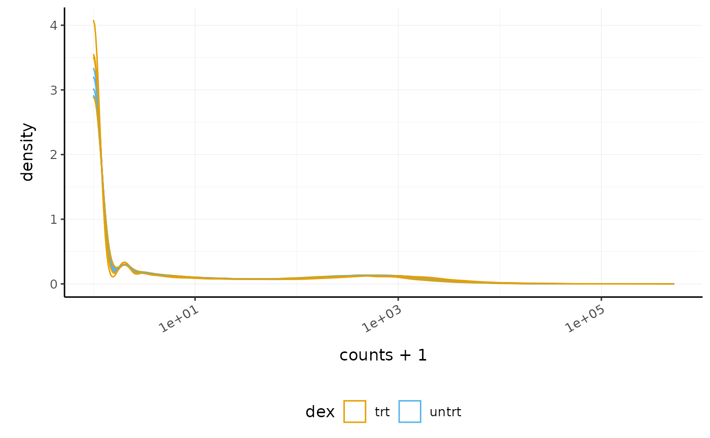

Introduction to Tidy Transcriptomics
Maria Doyle, Peter MacCallum Cancer Centre1
Stefano Mangiola, Walter and Eliza Hall Institute2
Source:vignettes/tidytranscriptomics.Rmd
tidytranscriptomics.RmdBackground
Background information and setup instructions for this workshop can be found here.
Part 1 Bulk RNA-seq with tidybulk
This workshop will present how to perform analysis of RNA sequencing data following the tidy data paradigm (Wickham and others 2014). The tidy data paradigm provides a standard way to organise data values within a dataset, where each variable is a column, each observation is a row, and data is manipulated using an easy-to-understand vocabulary. Most importantly, the data structure remains consistent across manipulation and analysis functions.
This can be achieved for RNA sequencing data with the tidybulk, tidyHeatmap (Mangiola and Papenfuss 2020) and tidyverse (Wickham et al. 2019) packages. The tidybulk package provides a tidy data structure and a modular framework for bulk transcriptional analyses. tidyHeatmap provides a tidy implementation of ComplexHeatmap. These packages are part of the tidytranscriptomics suite that introduces a tidy approach to RNA sequencing data representation and analysis
Acknowledgements
Some of the material in Part 1 was adapted from an R for RNA sequencing workshop first run here. Use of the airway dataset was inspired by the DESeq2 vignette.

Introduction
Measuring gene expression on a genome-wide scale has become common practice over the last two decades or so, with microarrays predominantly used pre-2008. With the advent of next generation sequencing technology in 2008, an increasing number of scientists use this technology to measure and understand changes in gene expression in often complex systems. As sequencing costs have decreased, using RNA sequencing to simultaneously measure the expression of tens of thousands of genes for multiple samples has never been easier. The cost of these experiments has now moved from generating the data to storing and analysing it.
There are many steps involved in analysing an RNA sequencing dataset. Sequenced reads are aligned to a reference genome, then the number of reads mapped to each gene can be counted. This results in a table of counts, which is what we perform statistical analyses on in R. While mapping and counting are important and necessary tasks, today we will be starting from the count data and showing how differential expression analysis can be performed in a friendly way using the Bioconductor package, tidybulk.
First, let’s load all the packages we will need to analyse the data.
Note: you should load the tidybulk library after the tidyverse core packages for best integration.
# load libraries
# dataset
library(airway)
# tidyverse core packages
library(tibble)
library(dplyr)
library(tidyr)
library(readr)
library(stringr)
library(ggplot2)
# tidyverse-friendly packages
library(plotly)
library(ggrepel)
library(GGally)
library(tidyHeatmap)
library(tidybulk)Plot settings. Set the colours and theme we will use for our plots.
# Use colourblind-friendly colours
friendly_cols <- dittoSeq::dittoColors()
# Set theme
custom_theme <-
list(
scale_fill_manual(values = friendly_cols),
scale_color_manual(values = friendly_cols),
theme_bw() +
theme(
panel.border = element_blank(),
axis.line = element_line(),
panel.grid.major = element_line(size = 0.2),
panel.grid.minor = element_line(size = 0.1),
text = element_text(size = 12),
legend.position = "bottom",
strip.background = element_blank(),
axis.title.x = element_text(margin = margin(t = 10, r = 10, b = 10, l = 10)),
axis.title.y = element_text(margin = margin(t = 10, r = 10, b = 10, l = 10)),
axis.text.x = element_text(angle = 30, hjust = 1, vjust = 1)
)
)Setting up the data
Here we will perform our analysis using the data from the airway package. The airway data comes from the paper by (Himes et al. 2014); and it includes 8 samples from human airway smooth muscle cells, from 4 cell lines. For each cell line treated (with dexamethasone) and untreated (negative control) a sample has undergone RNA sequencing and gene counts have been generated.
The airway data is stored as a Bioconductor RangedSummarizedExperiment object. We will convert this object into a tidybulk tibble. A tibble is the tidyverse table format.
In this workshop we will be using the tidyverse pipe %>%. This ‘pipes’ the output from the command on the left into the command on the right/below. Using the pipe is not essential but it reduces the amount of code we need to write when we have multiple steps (as we’ll see later). It also can make the steps clearer and easier to see. For more details on the pipe see here.
# load airway RNA sequencing data
data(airway)
# convert to tidybulk tibble
counts_airway <-
airway %>%
tidybulk()
# take a look
counts_airway
#> # A tibble: 512,816 x 12
#> feature sample counts SampleName cell dex albut Run avgLength Experiment
#> <fct> <fct> <int> <fct> <fct> <fct> <fct> <fct> <int> <fct>
#> 1 ENSG00… SRR10… 679 GSM1275862 N613… untrt untrt SRR1… 126 SRX384345
#> 2 ENSG00… SRR10… 0 GSM1275862 N613… untrt untrt SRR1… 126 SRX384345
#> 3 ENSG00… SRR10… 467 GSM1275862 N613… untrt untrt SRR1… 126 SRX384345
#> 4 ENSG00… SRR10… 260 GSM1275862 N613… untrt untrt SRR1… 126 SRX384345
#> 5 ENSG00… SRR10… 60 GSM1275862 N613… untrt untrt SRR1… 126 SRX384345
#> 6 ENSG00… SRR10… 0 GSM1275862 N613… untrt untrt SRR1… 126 SRX384345
#> 7 ENSG00… SRR10… 3251 GSM1275862 N613… untrt untrt SRR1… 126 SRX384345
#> 8 ENSG00… SRR10… 1433 GSM1275862 N613… untrt untrt SRR1… 126 SRX384345
#> 9 ENSG00… SRR10… 519 GSM1275862 N613… untrt untrt SRR1… 126 SRX384345
#> 10 ENSG00… SRR10… 394 GSM1275862 N613… untrt untrt SRR1… 126 SRX384345
#> # … with 512,806 more rows, and 2 more variables: Sample <fct>, BioSample <fct>The counts_airway object contains information about genes and samples, the first column has the Ensembl gene identifier, the second column has the sample identifier and the third column has the gene transcription abundance. The abundance is the number of reads aligning to the gene in each experimental sample. The remaining columns include sample-wise information. The dex column tells us whether the samples are treated or untreated and the cell column tells us what cell line they are from. We can shorten the sample names. We can remove the SRR1039 prefix that’s present in all of them, as shorter names can fit better in some of the plots we will create. We can use mutate() together with str_replace() to remove the SRR1039 string from the sample column. We can get the gene symbols for these Ensembl gene ids using the Bioconductor annotation package for human, org.Hs.eg.db and add them as a column using mutate again. With tidyverse, all above steps can be linked with the %>%, as shown below. This has the benefits that * no temporary variables need to be created * less typing is required * the steps can be seen more clearly.
# setup data workflow
counts_tt <-
airway %>%
tidybulk() %>%
mutate(sample = str_remove(sample, "SRR1039")) %>%
mutate(symbol = AnnotationDbi::mapIds(org.Hs.eg.db::org.Hs.eg.db,
keys = as.character(feature),
keytype = "ENSEMBL",
column = "SYMBOL",
multiVals = "first"
))
#>
#> 'select()' returned 1:many mapping between keys and columns
# take a look
counts_tt
#> # A tibble: 512,816 x 13
#> feature sample counts SampleName cell dex albut Run avgLength Experiment
#> <fct> <chr> <int> <fct> <fct> <fct> <fct> <fct> <int> <fct>
#> 1 ENSG00… 508 679 GSM1275862 N613… untrt untrt SRR1… 126 SRX384345
#> 2 ENSG00… 508 0 GSM1275862 N613… untrt untrt SRR1… 126 SRX384345
#> 3 ENSG00… 508 467 GSM1275862 N613… untrt untrt SRR1… 126 SRX384345
#> 4 ENSG00… 508 260 GSM1275862 N613… untrt untrt SRR1… 126 SRX384345
#> 5 ENSG00… 508 60 GSM1275862 N613… untrt untrt SRR1… 126 SRX384345
#> 6 ENSG00… 508 0 GSM1275862 N613… untrt untrt SRR1… 126 SRX384345
#> 7 ENSG00… 508 3251 GSM1275862 N613… untrt untrt SRR1… 126 SRX384345
#> 8 ENSG00… 508 1433 GSM1275862 N613… untrt untrt SRR1… 126 SRX384345
#> 9 ENSG00… 508 519 GSM1275862 N613… untrt untrt SRR1… 126 SRX384345
#> 10 ENSG00… 508 394 GSM1275862 N613… untrt untrt SRR1… 126 SRX384345
#> # … with 512,806 more rows, and 3 more variables: Sample <fct>,
#> # BioSample <fct>, symbol <chr>From this tidybulk tibble, we can perform differential expression analysis with the tidybulk package.
Filtering lowly transcribed genes
Genes with very low counts across all libraries provide little evidence for differential expression and they can interfere with some of the statistical approximations that are used later in the pipeline. They also add to the multiple testing burden when estimating false discovery rates, reducing power to detect differentially expressed genes. These genes should be filtered out prior to further analysis.
We can perform the filtering using tidybulk keep_abundant or identify_abundant. These functions can use the edgeR filterByExpr function described in (Law et al. 2016) to automatically identify the genes with adequate abundance for differential expression testing. By default, this will keep genes with ~10 counts in a minimum number of samples, the number of the samples in the smallest group. In this dataset the smallest group size is four (as we have four dex-treated samples versus four untreated). Alternatively, we could use identify_abundant to identify which genes are abundant or not (TRUE/FALSE), rather than just keeping the abundant ones.
# Filtering counts
counts_filtered <- counts_tt %>% keep_abundant(factor_of_interest = dex)
# take a look
counts_filtered
#> # A tibble: 127,408 x 14
#> feature sample counts SampleName cell dex albut Run avgLength Experiment
#> <fct> <chr> <int> <fct> <fct> <fct> <fct> <fct> <int> <fct>
#> 1 ENSG00… 508 679 GSM1275862 N613… untrt untrt SRR1… 126 SRX384345
#> 2 ENSG00… 508 467 GSM1275862 N613… untrt untrt SRR1… 126 SRX384345
#> 3 ENSG00… 508 260 GSM1275862 N613… untrt untrt SRR1… 126 SRX384345
#> 4 ENSG00… 508 60 GSM1275862 N613… untrt untrt SRR1… 126 SRX384345
#> 5 ENSG00… 508 3251 GSM1275862 N613… untrt untrt SRR1… 126 SRX384345
#> 6 ENSG00… 508 1433 GSM1275862 N613… untrt untrt SRR1… 126 SRX384345
#> 7 ENSG00… 508 519 GSM1275862 N613… untrt untrt SRR1… 126 SRX384345
#> 8 ENSG00… 508 394 GSM1275862 N613… untrt untrt SRR1… 126 SRX384345
#> 9 ENSG00… 508 172 GSM1275862 N613… untrt untrt SRR1… 126 SRX384345
#> 10 ENSG00… 508 2112 GSM1275862 N613… untrt untrt SRR1… 126 SRX384345
#> # … with 127,398 more rows, and 4 more variables: Sample <fct>,
#> # BioSample <fct>, symbol <chr>, .abundant <lgl>After running keep_abundant we have a column called .abundant containing TRUE (identify_abundant would have TRUE/FALSE).
Scaling counts to normalise
Scaling of counts, normalisation, is performed to eliminate uninteresting differences between samples due to sequencing depth or composition. A more detailed explanation can be found here. In the tidybulk package the function scale_abundance generates scaled counts, with scaling factors calculated on abundant (filtered) transcripts and applied to all transcripts. We can choose from different normalisation methods. Here we will use the default, edgeR’s trimmed mean of M values (TMM), (Robinson and Oshlack 2010). TMM normalisation (and most scaling normalisation methods) scale relative to one sample.
# Scaling counts
counts_scaled <- counts_filtered %>% scale_abundance()
# take a look
counts_scaled
#> # A tibble: 127,408 x 17
#> feature sample counts SampleName cell dex albut Run avgLength Experiment
#> <fct> <chr> <int> <fct> <fct> <fct> <fct> <fct> <int> <fct>
#> 1 ENSG00… 508 679 GSM1275862 N613… untrt untrt SRR1… 126 SRX384345
#> 2 ENSG00… 508 467 GSM1275862 N613… untrt untrt SRR1… 126 SRX384345
#> 3 ENSG00… 508 260 GSM1275862 N613… untrt untrt SRR1… 126 SRX384345
#> 4 ENSG00… 508 60 GSM1275862 N613… untrt untrt SRR1… 126 SRX384345
#> 5 ENSG00… 508 3251 GSM1275862 N613… untrt untrt SRR1… 126 SRX384345
#> 6 ENSG00… 508 1433 GSM1275862 N613… untrt untrt SRR1… 126 SRX384345
#> 7 ENSG00… 508 519 GSM1275862 N613… untrt untrt SRR1… 126 SRX384345
#> 8 ENSG00… 508 394 GSM1275862 N613… untrt untrt SRR1… 126 SRX384345
#> 9 ENSG00… 508 172 GSM1275862 N613… untrt untrt SRR1… 126 SRX384345
#> 10 ENSG00… 508 2112 GSM1275862 N613… untrt untrt SRR1… 126 SRX384345
#> # … with 127,398 more rows, and 7 more variables: Sample <fct>,
#> # BioSample <fct>, symbol <chr>, .abundant <lgl>, TMM <dbl>,
#> # multiplier <dbl>, counts_scaled <dbl>After we run scale_abundance we should see some columns have been added at the end. The counts_scaled column contains the scaled counts.
We can visualise the difference of abundance densities before and after scaling. As tidybulk output is compatible with tidyverse, we can simply pipe it into standard tidyverse functions such as filter, pivot_longer and ggplot. We can also take advantage of ggplot’s facet_wrap to easily create multiple plots.
counts_scaled %>%
# Reshaping
pivot_longer(cols = c("counts", "counts_scaled"), names_to = "source", values_to = "abundance") %>%
# Plotting
ggplot(aes(x = abundance + 1, color = sample)) +
geom_density() +
facet_wrap(~source) +
scale_x_log10() +
custom_themeIn this dataset the distributions of the counts are not very different to each other before scaling but scaling does make the distributions more similar. If we saw a sample with a very different distribution we may need to investigate it.
As tidybulk smoothly integrates with ggplot2 and other tidyverse packages it can save on typing and make plots easier to generate. Compare the code for creating density plots with tidybulk versus standard base R below (standard code adapted from (Law et al. 2016)).
tidybulk
# tidybulk
airway %>%
tidybulk() %>%
keep_abundant(factor_of_interest = dex) %>%
scale_abundance() %>%
pivot_longer(cols = c("counts", "counts_scaled"), names_to = "source", values_to = "abundance") %>%
ggplot(aes(x = abundance + 1, color = sample)) +
geom_density() +
facet_wrap(~source) +
scale_x_log10() +
custom_themebase R using edgeR
# Example code, no need to run
# Prepare data set
library(edgeR)
dgList <- SE2DGEList(airway)
group <- factor(dgList$samples$dex)
keep.exprs <- filterByExpr(dgList, group = group)
dgList <- dgList[keep.exprs, , keep.lib.sizes = FALSE]
nsamples <- ncol(dgList)
logcounts <- log2(dgList$counts)
# Setup graphics
col <- RColorBrewer::brewer.pal(nsamples, "Paired")
par(mfrow = c(1, 2))
# Plot raw counts
plot(density(logcounts[, 1]), col = col[1], lwd = 2, ylim = c(0, 0.26), las = 2, main = "", xlab = "")
title(main = "Counts")
for (i in 2:nsamples) {
den <- density(logcounts[, i])
lines(den$x, den$y, col = col[i], lwd = 2)
}
legend("topright", legend = dgList$samples$Run, text.col = col, bty = "n")
# Plot scaled counts
dgList_norm <- calcNormFactors(dgList)
lcpm_n <- cpm(dgList_norm, log = TRUE)
plot(density(lcpm_n[, 1]), col = col[1], lwd = 2, ylim = c(0, 0.26), las = 2, main = "", xlab = "")
title("Counts scaled")
for (i in 2:nsamples) {
den <- density(lcpm_n[, i])
lines(den$x, den$y, col = col[i], lwd = 2)
}
legend("topright", legend = dgList_norm$samples$Run, text.col = col, bty = "n")Exploratory analyses
Dimensionality reduction
By far, one of the most important plots we make when we analyse RNA sequencing data are principal-component analysis (PCA) or multi-dimensional scaling (MDS) plots. We reduce the dimensions of the data to identify the greatest sources of variation in the data. A principal components analysis is an example of an unsupervised analysis, where we don’t need to specify the groups. If your experiment is well controlled and has worked well, what we hope to see is that the greatest sources of variation in the data are the treatments/groups we are interested in. It is also an incredibly useful tool for quality control and checking for outliers. We can use the reduce_dimensions function to calculate the dimensions.
# Get principal components
counts_scal_PCA <-
counts_scaled %>%
reduce_dimensions(method = "PCA")
#> Getting the 500 most variable genes
#> Fraction of variance explained by the selected principal components
#> # A tibble: 2 x 2
#> `Fraction of variance` PC
#> <dbl> <int>
#> 1 0.353 1
#> 2 0.312 2
#> tidybulk says: to access the raw results do `attr(..., "internals")$PCA`Poll: What fraction of variance is explained by PC3?
See ?reduce_dimensions for how to get additional dimensions.This joins the result to the counts object.
# Take a look
counts_scal_PCA
#> # A tibble: 127,408 x 19
#> feature sample counts SampleName cell dex albut Run avgLength Experiment
#> <fct> <chr> <int> <fct> <fct> <fct> <fct> <fct> <int> <fct>
#> 1 ENSG00… 508 679 GSM1275862 N613… untrt untrt SRR1… 126 SRX384345
#> 2 ENSG00… 508 467 GSM1275862 N613… untrt untrt SRR1… 126 SRX384345
#> 3 ENSG00… 508 260 GSM1275862 N613… untrt untrt SRR1… 126 SRX384345
#> 4 ENSG00… 508 60 GSM1275862 N613… untrt untrt SRR1… 126 SRX384345
#> 5 ENSG00… 508 3251 GSM1275862 N613… untrt untrt SRR1… 126 SRX384345
#> 6 ENSG00… 508 1433 GSM1275862 N613… untrt untrt SRR1… 126 SRX384345
#> 7 ENSG00… 508 519 GSM1275862 N613… untrt untrt SRR1… 126 SRX384345
#> 8 ENSG00… 508 394 GSM1275862 N613… untrt untrt SRR1… 126 SRX384345
#> 9 ENSG00… 508 172 GSM1275862 N613… untrt untrt SRR1… 126 SRX384345
#> 10 ENSG00… 508 2112 GSM1275862 N613… untrt untrt SRR1… 126 SRX384345
#> # … with 127,398 more rows, and 9 more variables: Sample <fct>,
#> # BioSample <fct>, symbol <chr>, .abundant <lgl>, TMM <dbl>,
#> # multiplier <dbl>, counts_scaled <dbl>, PC1 <dbl>, PC2 <dbl>For plotting, we can select just the sample-wise information with pivot_sample.
# take a look
counts_scal_PCA %>% pivot_sample()
#> # A tibble: 8 x 15
#> sample SampleName cell dex albut Run avgLength Experiment Sample
#> <chr> <fct> <fct> <fct> <fct> <fct> <int> <fct> <fct>
#> 1 508 GSM1275862 N613… untrt untrt SRR1… 126 SRX384345 SRS50…
#> 2 509 GSM1275863 N613… trt untrt SRR1… 126 SRX384346 SRS50…
#> 3 512 GSM1275866 N052… untrt untrt SRR1… 126 SRX384349 SRS50…
#> 4 513 GSM1275867 N052… trt untrt SRR1… 87 SRX384350 SRS50…
#> 5 516 GSM1275870 N080… untrt untrt SRR1… 120 SRX384353 SRS50…
#> 6 517 GSM1275871 N080… trt untrt SRR1… 126 SRX384354 SRS50…
#> 7 520 GSM1275874 N061… untrt untrt SRR1… 101 SRX384357 SRS50…
#> 8 521 GSM1275875 N061… trt untrt SRR1… 98 SRX384358 SRS50…
#> # … with 6 more variables: BioSample <fct>, .abundant <lgl>, TMM <dbl>,
#> # multiplier <dbl>, PC1 <dbl>, PC2 <dbl>We can now plot the reduced dimensions.
# PCA plot
counts_scal_PCA %>%
pivot_sample() %>%
ggplot(aes(x = PC1, y = PC2, colour = dex, shape = cell)) +
geom_point() +
geom_text_repel(aes(label = sample), show.legend = FALSE) +
custom_theme
The samples separate by treatment on PC1 which is what we hope to see. PC2 separates the N080611 cell line from the other samples, indicating a greater difference between that cell line and the others.
Hierarchical clustering with heatmaps
An alternative to principal component analysis for examining relationships between samples is using hierarchical clustering. Heatmaps are a nice visualisation to examine hierarchical clustering of your samples. tidybulk has a simple function we can use, keep_variable, to extract the most variable genes which we can then plot with tidyHeatmap.
counts_scal_PCA %>%
# extract 500 most variable genes
keep_variable(.abundance = counts_scaled, top = 500) %>%
# create heatmap
heatmap(
.column = sample,
.row = feature,
.value = counts_scaled,
transform = log1p
) %>%
add_tile(dex) %>%
add_tile(cell)
#> Getting the 500 most variable genesIn the heatmap we can see the samples cluster into two groups, treated and untreated, for three of the cell lines, and the cell line (N080611) again is further away from the others.
Tidybulk enables a simplified way of generating a clustered heatmap of variable genes. Compare the code below for tidybulk versus a base R method.
base R using edgeR
# Example code, no need to run
library(edgeR)
dgList <- SE2DGEList(airway)
group <- factor(dgList$samples$dex)
keep.exprs <- filterByExpr(dgList, group = group)
dgList <- dgList[keep.exprs, , keep.lib.sizes = FALSE]
dgList <- calcNormFactors(dgList)
logcounts <- cpm(dgList, log = TRUE)
var_genes <- apply(logcounts, 1, var)
select_var <- names(sort(var_genes, decreasing = TRUE))[1:500]
highly_variable_lcpm <- logcounts[select_var, ]
colours <- c("#440154FF", "#21908CFF", "#fefada")
col.group <- c("red", "grey")[group]
gplots::heatmap.2(highly_variable_lcpm, col = colours, trace = "none", ColSideColors = col.group, scale = "row")Differential expression
tidybulk integrates several popular methods for differential transcript abundance testing: the edgeR quasi-likelihood (Chen, Lun, and Smyth 2016) (tidybulk default method), edgeR likelihood ratio (McCarthy, Chen, and Smyth 2012), limma-voom (Law et al. 2014) and DESeq2 (Love, Huber, and Anders 2014). A common question researchers have is which method to choose. With tidybulk we can easily run multiple methods and compare.
We give test_differential_abundance our tidybulk counts object and a formula, specifying the column that contains our groups to be compared. If all our samples were from the same cell line, and there were no additional factors contributing variance such as batch differences, we could use the formula ~ dex. However, each treated and untreated sample is from a different cell line so we add the cell line as an additional factor ~ dex + cell.
de_all <-
counts_scal_PCA %>%
# edgeR QLT
test_differential_abundance(
~ dex + cell,
method = "edgeR_quasi_likelihood",
prefix = "edgerQLT_"
) %>%
# edgeR LRT
test_differential_abundance(
~ dex + cell,
method = "edgeR_likelihood_ratio",
prefix = "edgerLR_"
) %>%
# limma-voom
test_differential_abundance(
~ dex + cell,
method = "limma_voom",
prefix = "voom_"
) %>%
# DESeq2
test_differential_abundance(
~ dex + cell,
method = "deseq2",
prefix = "deseq2_"
)
# take a look
de_all
#> # A tibble: 127,408 x 41
#> feature sample counts SampleName cell dex albut Run avgLength Experiment
#> <chr> <chr> <int> <fct> <fct> <fct> <fct> <fct> <int> <fct>
#> 1 ENSG00… 508 679 GSM1275862 N613… untrt untrt SRR1… 126 SRX384345
#> 2 ENSG00… 508 467 GSM1275862 N613… untrt untrt SRR1… 126 SRX384345
#> 3 ENSG00… 508 260 GSM1275862 N613… untrt untrt SRR1… 126 SRX384345
#> 4 ENSG00… 508 60 GSM1275862 N613… untrt untrt SRR1… 126 SRX384345
#> 5 ENSG00… 508 3251 GSM1275862 N613… untrt untrt SRR1… 126 SRX384345
#> 6 ENSG00… 508 1433 GSM1275862 N613… untrt untrt SRR1… 126 SRX384345
#> 7 ENSG00… 508 519 GSM1275862 N613… untrt untrt SRR1… 126 SRX384345
#> 8 ENSG00… 508 394 GSM1275862 N613… untrt untrt SRR1… 126 SRX384345
#> 9 ENSG00… 508 172 GSM1275862 N613… untrt untrt SRR1… 126 SRX384345
#> 10 ENSG00… 508 2112 GSM1275862 N613… untrt untrt SRR1… 126 SRX384345
#> # … with 127,398 more rows, and 31 more variables: Sample <fct>,
#> # BioSample <fct>, symbol <chr>, .abundant <lgl>, TMM <dbl>,
#> # multiplier <dbl>, counts_scaled <dbl>, PC1 <dbl>, PC2 <dbl>,
#> # edgerQLT_logFC <dbl>, edgerQLT_logCPM <dbl>, edgerQLT_F <dbl>,
#> # edgerQLT_PValue <dbl>, edgerQLT_FDR <dbl>, edgerLR_logFC <dbl>,
#> # edgerLR_logCPM <dbl>, edgerLR_LR <dbl>, edgerLR_PValue <dbl>,
#> # edgerLR_FDR <dbl>, voom_logFC <dbl>, voom_AveExpr <dbl>, voom_t <dbl>,
#> # voom_P.Value <dbl>, voom_adj.P.Val <dbl>, voom_B <dbl>,
#> # deseq2_baseMean <dbl>, deseq2_log2FoldChange <dbl>, deseq2_lfcSE <dbl>,
#> # deseq2_stat <dbl>, deseq2_pvalue <dbl>, deseq2_padj <dbl>This outputs the columns from each method such as log-fold change (logFC), false-discovery rate (FDR) and probability value (p-value). logFC is log2(treated/untreated).
Comparison of methods
We can visually compare the significance for all methods. We will notice that there is some difference between the methods.
de_all %>%
pivot_transcript() %>%
select(edgerQLT_PValue, edgerLR_PValue, voom_P.Value, deseq2_pvalue, feature) %>%
ggpairs(1:4)
In order to decide which genes are differentially expressed, we usually take a cut-off of 0.05 on the FDR (or adjusted P value), NOT the raw p-value. This is because we are testing many genes (multiple testing), and the chances of finding differentially expressed genes is very high when you do that many tests. Hence we need to control the false discovery rate, which is the adjusted p-value column in the results table. What this means is that if 100 genes are significant at a 5% false discovery rate, we are willing to accept that 5 will be false positives.
We can count how many differentially expressed genes there are, for example with the edgeR QLT method. We’ll filter on FDR 0.05.
de_all %>%
filter(edgerQLT_FDR < 0.05) %>%
summarise(num_de = n_distinct(feature))
#> # A tibble: 1 x 1
#> num_de
#> <int>
#> 1 4967Which method detects the most differentially abundant transcripts, p value adjusted for multiple testing < 0.05 (FDR, adj.P.Val, padj)?Note: Some of the methods produce columns with different names for similar outputs. If you wish to make these consistent you can do that with tidyverse rename. For example, to rename the p value adjusted columns you could run below.
de_all %>% rename(deseq2_FDR = deseq2_padj, voom_FDR = voom_adj.P.Val)We can select some of the transcripts that look different between methods in the plot using the tidygate package. We can then investigate these transcripts, for example, by visualising their counts.
With tidygate, we can interactively draw gates to select points we want using gate. We specify which columns we want to plot in the scatterplot, and how many gates we want to draw. We can also specify the opacity if we want to make it easier to see overlapping points.
de_gate <-
de_all %>%
tidygate::gate(
feature,
edgerQLT_PValue,
deseq2_pvalue,
opacity = 0.3,
how_many_gates = 2
)We then click to draw gates around the points we want, for example as shown in the screenshot below.

That will add a column called gate, specifying which gate the points (transcripts) are in.
#> Warning: `gate()` is deprecated as of tidygate 0.3.0.
#> Please use `gate_chr()` instead.
#> This warning is displayed once every 8 hours.
#> Call `lifecycle::last_warnings()` to see where this warning was generated.
#> # A tibble: 127,408 x 42
#> feature sample counts SampleName cell dex albut Run avgLength Experiment
#> <chr> <chr> <int> <fct> <fct> <fct> <fct> <fct> <int> <fct>
#> 1 ENSG00… 508 679 GSM1275862 N613… untrt untrt SRR1… 126 SRX384345
#> 2 ENSG00… 508 467 GSM1275862 N613… untrt untrt SRR1… 126 SRX384345
#> 3 ENSG00… 508 260 GSM1275862 N613… untrt untrt SRR1… 126 SRX384345
#> 4 ENSG00… 508 60 GSM1275862 N613… untrt untrt SRR1… 126 SRX384345
#> 5 ENSG00… 508 3251 GSM1275862 N613… untrt untrt SRR1… 126 SRX384345
#> 6 ENSG00… 508 1433 GSM1275862 N613… untrt untrt SRR1… 126 SRX384345
#> 7 ENSG00… 508 519 GSM1275862 N613… untrt untrt SRR1… 126 SRX384345
#> 8 ENSG00… 508 394 GSM1275862 N613… untrt untrt SRR1… 126 SRX384345
#> 9 ENSG00… 508 172 GSM1275862 N613… untrt untrt SRR1… 126 SRX384345
#> 10 ENSG00… 508 2112 GSM1275862 N613… untrt untrt SRR1… 126 SRX384345
#> # … with 127,398 more rows, and 32 more variables: Sample <fct>,
#> # BioSample <fct>, symbol <chr>, .abundant <lgl>, TMM <dbl>,
#> # multiplier <dbl>, counts_scaled <dbl>, PC1 <dbl>, PC2 <dbl>,
#> # edgerQLT_logFC <dbl>, edgerQLT_logCPM <dbl>, edgerQLT_F <dbl>,
#> # edgerQLT_PValue <dbl>, edgerQLT_FDR <dbl>, edgerLR_logFC <dbl>,
#> # edgerLR_logCPM <dbl>, edgerLR_LR <dbl>, edgerLR_PValue <dbl>,
#> # edgerLR_FDR <dbl>, voom_logFC <dbl>, voom_AveExpr <dbl>, voom_t <dbl>,
#> # voom_P.Value <dbl>, voom_adj.P.Val <dbl>, voom_B <dbl>,
#> # deseq2_baseMean <dbl>, deseq2_log2FoldChange <dbl>, deseq2_lfcSE <dbl>,
#> # deseq2_stat <dbl>, deseq2_pvalue <dbl>, deseq2_padj <dbl>, gate <chr>We can check how many transcripts we’ve got in each gate.
de_gate %>%
pivot_transcript() %>%
count(gate)
#> # A tibble: 3 x 2
#> gate n
#> <chr> <int>
#> 1 0 15905
#> 2 1 12
#> 3 2 9We can now select the transcripts from our two gates i.e. more significant in edgeR (gate 1) and more significant in DESeq2 (gate 2) and visualise the counts for each sample in the treated and untreated groups.
de_gate %>%
# Filter for transcripts within the gates
filter(gate > 0) %>%
# Rename for clarity
mutate(gate = case_when(
gate == 1 ~ "more in edgeR",
gate == 2 ~ "more in DESeq2",
TRUE ~ gate
)) %>%
# Order the plots for the transcripts
mutate(feature = forcats::fct_reorder(feature, edgerQLT_PValue, min)) %>%
# Plot
ggplot(aes(dex, counts_scaled, color = gate)) +
geom_point() +
facet_wrap(~feature, scale = "free_y", ncol = 4) +
custom_theme
We could also check the log fold changes for these genes and see, for example, that DESeq2 produces a more conservative logFC statistic for the gene ENSG00000104725.
de_gate %>%
pivot_transcript() %>%
filter(feature == "ENSG00000104725") %>%
select(edgerQLT_logFC, deseq2_log2FoldChange)
#> # A tibble: 1 x 2
#> edgerQLT_logFC deseq2_log2FoldChange
#> <dbl> <dbl>
#> 1 -0.694 -0.332Single method
If we just wanted to run one differential testing method we could do that. The default method is edgeR quasi-likelihood.
counts_de <- counts_scal_PCA %>%
test_differential_abundance(~ dex + cell)
#> =====================================
#> tidybulk says: All testing methods use raw counts, irrespective of if scale_abundance
#> or adjust_abundance have been calculated. Therefore, it is essential to add covariates
#> such as batch effects (if applicable) in the formula.
#> =====================================
#> tidybulk says: The design column names are "(Intercept), dexuntrt, cellN061011, cellN080611, cellN61311"
#> tidybulk says: to access the raw results (fitted GLM) do `attr(..., "internals")$edgeR`Tidybulk enables a simplified way of performing an RNA sequencing differential expression analysis (with the benefit of smoothly integrating with ggplot2 and other tidyverse packages). Compare the code for a tidybulk edgeR analysis versus standard edgeR below.
standard edgeR
# Example code, no need to run
library(edgeR)
dgList <- SE2DGEList(airway)
group <- factor(dgList$samples$dex)
keep.exprs <- filterByExpr(dgList, group = group)
dgList <- dgList[keep.exprs, , keep.lib.sizes = FALSE]
dgList <- calcNormFactors(dgList)
cell <- factor(dgList$samples$cell)
design <- model.matrix(~ group + cell)
dgList <- estimateDisp(dgList, design)
fit <- glmQLFit(dgList, design)
qlf <- glmQLFTest(fit, coef=2)Plots after testing for differentially expressed
We’ll extract the symbols for a few top genes (by P value) to use in some of the plots we will make.
topgenes_symbols <-
counts_de %>%
pivot_transcript() %>%
arrange(PValue) %>%
head(6) %>%
pull(symbol)Volcano plots
Volcano plots are a useful genome-wide plot for checking that the analysis looks good. Volcano plots enable us to visualise the significance of change (p-value) versus the fold change (logFC). Highly significant genes are towards the top of the plot. We can also colour significant genes (e.g. genes with false-discovery rate < 0.05)
# volcano plot, minimal
counts_de %>%
ggplot(aes(x = logFC, y = PValue, colour = FDR < 0.05)) +
geom_point() +
scale_y_continuous(trans = "log10_reverse") +
custom_theme
A more informative plot, integrating some of the packages in tidyverse.
counts_de %>%
pivot_transcript() %>%
# Subset data
mutate(significant = FDR < 0.05 & abs(logFC) >= 2) %>%
mutate(symbol = ifelse(symbol %in% topgenes_symbols, as.character(symbol), "")) %>%
# Plot
ggplot(aes(x = logFC, y = PValue, label = symbol)) +
geom_point(aes(color = significant, size = significant, alpha = significant)) +
geom_text_repel() +
# Custom scales
custom_theme +
scale_y_continuous(trans = "log10_reverse") +
scale_color_manual(values = c("black", "#e11f28")) +
scale_size_discrete(range = c(0, 2))
#> Scale for 'colour' is already present. Adding another scale for 'colour',
#> which will replace the existing scale.
Stripcharts
Before following up on the differentially expressed genes with further lab work, it is also recommended to have a look at the expression levels of the individual samples for the genes of interest. We can use stripcharts to do this. These will help show if expression is consistent amongst replicates in the groups.
With stripcharts we can see if replicates tend to group together and how the expression compares to the other groups. We’ll also add a box plot to show the distribution. Tidyverse faceting makes it easy to create a plot for each gene.
strip_chart <-
counts_scaled %>%
# extract counts for top differentially expressed genes
filter(symbol %in% topgenes_symbols) %>%
# make faceted stripchart
ggplot(aes(x = dex, y = counts_scaled + 1, fill = dex, label = sample)) +
geom_boxplot() +
geom_jitter() +
facet_wrap(~symbol) +
scale_y_log10() +
custom_theme
strip_chart
Interactive Plots
A really nice feature of using tidyverse and ggplot2 is that we can make interactive plots quite easily using the plotly package. This can be very useful for exploring what genes or samples are in the plots. We can make interactive plots directly from our ggplot2 object (strip_chart). Having label in the aes is useful to visualise the identifier of the data point (here the sample id) or other variables when we hover over the plot.
We can also specify which parameters from the aes we want to show up when we hover over the plot with tooltip.
Automatic bibliography
Tidybulk provides a handy function called get_bibliography that keeps track of the references for the methods used in your tidybulk workflow. The references are in BibTeX format and can be imported into your reference manager.
get_bibliography(counts_de)
#> @article{robinson2010edger,
#> title={edgeR: a Bioconductor package for differential expression analysis of digital gene expression data},
#> author={Robinson, Mark D and McCarthy, Davis J and Smyth, Gordon K},
#> journal={Bioinformatics},
#> volume={26},
#> number={1},
#> pages={139--140},
#> year={2010},
#> publisher={Oxford University Press}
#> }
#> @article{robinson2010scaling,
#> title={A scaling normalization method for differential expression analysis of RNA-seq data},
#> author={Robinson, Mark D and Oshlack, Alicia},
#> journal={Genome biology},
#> volume={11},
#> number={3},
#> pages={1--9},
#> year={2010},
#> publisher={BioMed Central}
#> }
#> @Manual{,
#> title = {R: A Language and Environment for Statistical Computing},
#> author = {{R Core Team}},
#> organization = {R Foundation for Statistical Computing},
#> address = {Vienna, Austria},
#> year = {2020},
#> url = {https://www.R-project.org/},
#> }
#> @incollection{smyth2005limma,
#> title={Limma: linear models for microarray data},
#> author={Smyth, Gordon K},
#> booktitle={Bioinformatics and computational biology solutions using R and Bioconductor},
#> pages={397--420},
#> year={2005},
#> publisher={Springer}
#> }Tidybulk ADD versus GET modes
In the next parts we will see action="get" being used with some tidybulk functions, so we will explain here what it is doing.
Every tidybulk function takes a tidybulk tibble as input, and
* action="add" outputs the new information joined to the original input data frame (default)
* action="get" outputs the new information with only the sample or transcript information, depending on what the analysis is
For example, with action="add" (default), we can add the PCA dimensions to the original data set. So we still have a row for every transcript in every sample.
counts_scaled %>%
reduce_dimensions(
method = "PCA",
action = "add")
#> Getting the 500 most variable genes
#> Fraction of variance explained by the selected principal components
#> # A tibble: 2 x 2
#> `Fraction of variance` PC
#> <dbl> <int>
#> 1 0.353 1
#> 2 0.312 2
#> tidybulk says: to access the raw results do `attr(..., "internals")$PCA`
#> # A tibble: 127,408 x 19
#> feature sample counts SampleName cell dex albut Run avgLength Experiment
#> <fct> <chr> <int> <fct> <fct> <fct> <fct> <fct> <int> <fct>
#> 1 ENSG00… 508 679 GSM1275862 N613… untrt untrt SRR1… 126 SRX384345
#> 2 ENSG00… 508 467 GSM1275862 N613… untrt untrt SRR1… 126 SRX384345
#> 3 ENSG00… 508 260 GSM1275862 N613… untrt untrt SRR1… 126 SRX384345
#> 4 ENSG00… 508 60 GSM1275862 N613… untrt untrt SRR1… 126 SRX384345
#> 5 ENSG00… 508 3251 GSM1275862 N613… untrt untrt SRR1… 126 SRX384345
#> 6 ENSG00… 508 1433 GSM1275862 N613… untrt untrt SRR1… 126 SRX384345
#> 7 ENSG00… 508 519 GSM1275862 N613… untrt untrt SRR1… 126 SRX384345
#> 8 ENSG00… 508 394 GSM1275862 N613… untrt untrt SRR1… 126 SRX384345
#> 9 ENSG00… 508 172 GSM1275862 N613… untrt untrt SRR1… 126 SRX384345
#> 10 ENSG00… 508 2112 GSM1275862 N613… untrt untrt SRR1… 126 SRX384345
#> # … with 127,398 more rows, and 9 more variables: Sample <fct>,
#> # BioSample <fct>, symbol <chr>, .abundant <lgl>, TMM <dbl>,
#> # multiplier <dbl>, counts_scaled <dbl>, PC1 <dbl>, PC2 <dbl>Or with action= "get" we can add the PCA dimensions to the original data set selecting just the sample-wise columns. Note that we now have just one row for every sample.
counts_scaled %>%
reduce_dimensions(
method = "PCA",
action = "get")
#> Getting the 500 most variable genes
#> Fraction of variance explained by the selected principal components
#> # A tibble: 2 x 2
#> `Fraction of variance` PC
#> <dbl> <int>
#> 1 0.353 1
#> 2 0.312 2
#> tidybulk says: to access the raw results do `attr(..., "internals")$PCA`
#> # A tibble: 8 x 15
#> sample SampleName cell dex albut Run avgLength Experiment Sample
#> <chr> <fct> <fct> <fct> <fct> <fct> <int> <fct> <fct>
#> 1 508 GSM1275862 N613… untrt untrt SRR1… 126 SRX384345 SRS50…
#> 2 509 GSM1275863 N613… trt untrt SRR1… 126 SRX384346 SRS50…
#> 3 512 GSM1275866 N052… untrt untrt SRR1… 126 SRX384349 SRS50…
#> 4 513 GSM1275867 N052… trt untrt SRR1… 87 SRX384350 SRS50…
#> 5 516 GSM1275870 N080… untrt untrt SRR1… 120 SRX384353 SRS50…
#> 6 517 GSM1275871 N080… trt untrt SRR1… 126 SRX384354 SRS50…
#> 7 520 GSM1275874 N061… untrt untrt SRR1… 101 SRX384357 SRS50…
#> 8 521 GSM1275875 N061… trt untrt SRR1… 98 SRX384358 SRS50…
#> # … with 6 more variables: BioSample <fct>, .abundant <lgl>, TMM <dbl>,
#> # multiplier <dbl>, PC1 <dbl>, PC2 <dbl>Cell type composition analysis
If we are sequencing tissue samples, we may want to know what cell types are present and if there are differences in expression between them. tidybulk has a deconvolve_cellularity function that can help us do this.
For this example we will use a subset of the breast cancer dataset from The Cancer Genome Atlas (TCGA).
BRCA_tidy <-
bioceurope2020tidytranscriptomics::BRCA %>%
tidybulk(patient, transcript, count)
BRCA_tidy
#> # A tibble: 198,374 x 5
#> patient transcript count time event_occurred
#> <fct> <fct> <int> <dbl> <int>
#> 1 TCGA-C8-A275 C1orf112 1571 1 0
#> 2 TCGA-C8-A275 FGR 1873 1 0
#> 3 TCGA-C8-A275 FUCA2 3770 1 0
#> 4 TCGA-C8-A275 GCLC 2738 1 0
#> 5 TCGA-C8-A275 LAS1L 3175 1 0
#> 6 TCGA-C8-A275 ENPP4 1340 1 0
#> 7 TCGA-C8-A275 SEMA3F 5479 1 0
#> 8 TCGA-C8-A275 RAD52 472 1 0
#> 9 TCGA-C8-A275 BAD 1761 1 0
#> 10 TCGA-C8-A275 CD99 14697 1 0
#> # … with 198,364 more rowsWith tidybulk, we can easily infer the proportions of cell types within a tissue using one of several published methods (Cibersort (Newman et al. 2015), EPIC (Racle et al. 2017) and llsr (Abbas et al. 2009)). Here we will use Cibersort which provides a default signature called LM22 to define the cell types. LM22 contains 547 genes that identify 22 human immune cell types.
BRCA_cell_type <-
BRCA_tidy %>%
deconvolve_cellularity(action = "get")
BRCA_cell_type
#> # A tibble: 22 x 25
#> patient time event_occurred `cibersort: B c… `cibersort: B c…
#> <chr> <dbl> <int> <dbl> <dbl>
#> 1 TCGA-C… 1 0 0.0325 0
#> 2 TCGA-A… 1 0 0.0170 0
#> 3 TCGA-A… 5 0 0.00127 0
#> 4 TCGA-C… 5 0 0.0372 0
#> 5 TCGA-P… 5 0 0.00453 0
#> 6 TCGA-B… 6292 0 0.144 0
#> 7 TCGA-B… 7106 0 0.0632 0
#> 8 TCGA-B… 7777 0 0 0.0142
#> 9 TCGA-B… 8008 0 0.203 0
#> 10 TCGA-B… 8391 0 0.147 0
#> # … with 12 more rows, and 20 more variables: `cibersort: Plasma cells` <dbl>,
#> # `cibersort: T cells CD8` <dbl>, `cibersort: T cells CD4 naive` <dbl>,
#> # `cibersort: T cells CD4 memory resting` <dbl>, `cibersort: T cells CD4
#> # memory activated` <dbl>, `cibersort: T cells follicular helper` <dbl>,
#> # `cibersort: T cells regulatory (Tregs)` <dbl>, `cibersort: T cells gamma
#> # delta` <dbl>, `cibersort: NK cells resting` <dbl>, `cibersort: NK cells
#> # activated` <dbl>, `cibersort: Monocytes` <dbl>, `cibersort: Macrophages
#> # M0` <dbl>, `cibersort: Macrophages M1` <dbl>, `cibersort: Macrophages
#> # M2` <dbl>, `cibersort: Dendritic cells resting` <dbl>, `cibersort:
#> # Dendritic cells activated` <dbl>, `cibersort: Mast cells resting` <dbl>,
#> # `cibersort: Mast cells activated` <dbl>, `cibersort: Eosinophils` <dbl>,
#> # `cibersort: Neutrophils` <dbl>Cell type proportions are added to the tibble as new columns. The prefix makes it easy to reshape the data frame if needed, for visualisation or further analyses.
BRCA_cell_type_long <-
BRCA_cell_type %>%
# Reshape
pivot_longer(
contains("cibersort"),
names_prefix = "cibersort: ",
names_to = "cell_type",
values_to = "proportion"
)
BRCA_cell_type_long
#> # A tibble: 484 x 5
#> patient time event_occurred cell_type proportion
#> <chr> <dbl> <int> <chr> <dbl>
#> 1 TCGA-C8-A275 1 0 B cells naive 0.0325
#> 2 TCGA-C8-A275 1 0 B cells memory 0
#> 3 TCGA-C8-A275 1 0 Plasma cells 0.0127
#> 4 TCGA-C8-A275 1 0 T cells CD8 0
#> 5 TCGA-C8-A275 1 0 T cells CD4 naive 0.0507
#> 6 TCGA-C8-A275 1 0 T cells CD4 memory resting 0.0299
#> 7 TCGA-C8-A275 1 0 T cells CD4 memory activated 0.0332
#> 8 TCGA-C8-A275 1 0 T cells follicular helper 0
#> 9 TCGA-C8-A275 1 0 T cells regulatory (Tregs) 0.0326
#> 10 TCGA-C8-A275 1 0 T cells gamma delta 0.0247
#> # … with 474 more rowsWe can plot the proportions of immune cell types for each patient.
BRCA_cell_type_long %>%
# Plot proportions
ggplot(aes(x = patient, y = proportion, fill = cell_type)) +
geom_bar(stat = "identity") +
custom_theme
We can visualise the similarity of the tissue composition for the patients by performing a dimensionality reduction on cell type and proportion (rather than on transcript and counts as we did previously).
BRCA_cell_type_long %>%
# Filter cell types with proportion zero in all patients
group_by(cell_type) %>%
filter(sum(proportion) > 0) %>%
ungroup() %>%
reduce_dimensions(
patient,
cell_type,
proportion,
method = "PCA",
action = "get"
) %>%
ggplot(aes(PC1, PC2, label = patient)) +
geom_point(color = "red") +
ggrepel::geom_text_repel(size = 3) +
custom_theme
#> Getting the 21 most variable genes
#> Fraction of variance explained by the selected principal components
#> # A tibble: 2 x 2
#> `Fraction of variance` PC
#> <dbl> <int>
#> 1 0.183 1
#> 2 0.152 2
#> tidybulk says: to access the raw results do `attr(..., "internals")$PCA`
Poll: What is the most abundant cell type overall in BRCA samples?We can also perform differential tissue composition analyses, similar to how we performed differential transcript abundance analyses. We use tidybulk’s test_differential_cellularity and can perform our analyses using a known factor of interest, such as tumour subtype, or using survival data. Here we use survival data available from TCGA (Liu et al. 2018).
library(survival)
BRCA_tidy_survival <-
BRCA_tidy %>%
test_differential_cellularity(Surv(time, event_occurred) ~ ., cores = 1) %>%
arrange(p.value)
BRCA_tidy_survival %>%
dplyr::select(.cell_type, p.value, everything())
#> # A tibble: 22 x 6
#> .cell_type p.value cell_type_proport… estimate std.error statistic
#> <chr> <dbl> <list> <dbl> <dbl> <dbl>
#> 1 NK cells resting 0.0863 <tibble [22 × 6]> 0.330 0.192 1.72
#> 2 T cells CD4 memory a… 0.0884 <tibble [22 × 6]> 0.313 0.184 1.70
#> 3 Mast cells resting 0.150 <tibble [22 × 6]> -0.379 0.264 -1.44
#> 4 T cells CD4 memory r… 0.161 <tibble [22 × 6]> -0.865 0.617 -1.40
#> 5 Macrophages M2 0.164 <tibble [22 × 6]> 0.365 0.262 1.39
#> 6 T cells gamma delta 0.291 <tibble [22 × 6]> -0.534 0.506 -1.06
#> 7 T cells regulatory (… 0.330 <tibble [22 × 6]> -0.496 0.509 -0.975
#> 8 T cells follicular h… 0.372 <tibble [22 × 6]> -0.205 0.229 -0.893
#> 9 Macrophages M0 0.520 <tibble [22 × 6]> -0.248 0.385 -0.643
#> 10 T cells CD4 naive 0.579 <tibble [22 × 6]> 0.113 0.204 0.555
#> # … with 12 more rowsWe can visualise the proportions for the cell types most associated with survival.
BRCA_tidy_survival %>%
dplyr::slice(1:2) %>%
unnest(cell_type_proportions) %>%
ggplot(aes(time, .proportion, color = factor(event_occurred))) +
geom_point() +
facet_wrap(~.cell_type) +
scale_x_log10() +
scale_y_continuous(trans = "logit") +
custom_theme
#> Warning: Transformation introduced infinite values in continuous y-axis
Key Points
- RNA sequencing data can be represented and analysed in a ‘tidy’ way using tidybulk and the tidyverse
- With the modularity offered by piping we don’t need to create variables, unless an object is used more than one. This improves robustness of the code.
- The principles of tidy transcriptomics are to interface as much as possible with commonly known manipulation and visualisation tools, rather than creating custom functions.
- Some of the key steps in an RNA sequencing analysis are (i) filtering lowly abundant transcripts, (ii) adjusting for differences in sequencing depth and composition, (iii) testing for differential expression
- Dimensionality reduction (PCA or MDS) plots are very important for exploring the data
- Density plots, volcano plots, strip-charts and heatmaps are useful visualisation tools for evaluating the hypothesis testing.
-
tidybulkallows streamlined multi-method analyses -
tidybulkallow easy analyses of cell type composition - Testing for differences in tissue composition between samples is analogous to the testing for differences in transcript abundance
Supplementary
Some things we don’t have time to cover in Part 1 of this workshop can be found in the Supplementary material.
Tidify SummarizedExperiment into tidySummarizedExperiment
This is a SummarizedExperiment object but it is evaluated as tibble. So it is fully compatible both with SummarizedExperiment and tidyverse APIs.
library(tidySummarizedExperiment)
#>
#> Attaching package: 'tidySummarizedExperiment'
#> The following objects are masked from 'package:tidybulk':
#>
#> bind_cols, bind_rows, distinct, filter, full_join, group_by,
#> inner_join, left_join, mutate, nest, rename, right_join, rowwise,
#> summarise, unnest
#> The following object is masked from 'package:tidyHeatmap':
#>
#> pasilla
#> The following object is masked from 'package:plotly':
#>
#> plot_ly
#> The following objects are masked from 'package:dplyr':
#>
#> bind_cols, bind_rows, count
#> The following object is masked from 'package:IRanges':
#>
#> slice
#> The following object is masked from 'package:S4Vectors':
#>
#> rename
#> The following object is masked from 'package:matrixStats':
#>
#> count
#> The following object is masked from 'package:stats':
#>
#> filter
pasilla_tidy <- airway %>% tidy()It looks like a tibble
pasilla_tidy
#> # A tibble abstraction: 512,816 x 21
#> sample SampleName cell dex albut Run avgLength Experiment Sample
#> <chr> <fct> <fct> <fct> <fct> <fct> <int> <fct> <fct>
#> 1 SRR10… GSM1275862 N613… untrt untrt SRR1… 126 SRX384345 SRS50…
#> 2 SRR10… GSM1275862 N613… untrt untrt SRR1… 126 SRX384345 SRS50…
#> 3 SRR10… GSM1275862 N613… untrt untrt SRR1… 126 SRX384345 SRS50…
#> 4 SRR10… GSM1275862 N613… untrt untrt SRR1… 126 SRX384345 SRS50…
#> 5 SRR10… GSM1275862 N613… untrt untrt SRR1… 126 SRX384345 SRS50…
#> 6 SRR10… GSM1275862 N613… untrt untrt SRR1… 126 SRX384345 SRS50…
#> 7 SRR10… GSM1275862 N613… untrt untrt SRR1… 126 SRX384345 SRS50…
#> 8 SRR10… GSM1275862 N613… untrt untrt SRR1… 126 SRX384345 SRS50…
#> 9 SRR10… GSM1275862 N613… untrt untrt SRR1… 126 SRX384345 SRS50…
#> 10 SRR10… GSM1275862 N613… untrt untrt SRR1… 126 SRX384345 SRS50…
#> # … with 40 more rows, and 12 more variables: BioSample <fct>,
#> # transcript <chr>, counts <int>, group <int>, group_name <chr>,
#> # seqnames <fct>, start <int>, end <int>, width <int>, strand <fct>,
#> # exon_id <int>, exon_name <chr>But it is a SummarizedExperiment object after all
assays(pasilla_tidy)
#> List of length 1
#> names(1): countsTidyverse commands
We can use tidyverse commands to explore the tidy SummarizedExperiment object.
We can use slice to choose rows by position, for example to choose the first row.
pasilla_tidy %>% slice(1)
#> # A tibble abstraction: 1 x 21
#> sample SampleName cell dex albut Run avgLength Experiment Sample
#> <chr> <fct> <fct> <fct> <fct> <fct> <int> <fct> <fct>
#> 1 SRR10… GSM1275862 N613… untrt untrt SRR1… 126 SRX384345 SRS50…
#> # … with 12 more variables: BioSample <fct>, transcript <chr>, counts <int>,
#> # group <int>, group_name <chr>, seqnames <fct>, start <int>, end <int>,
#> # width <int>, strand <fct>, exon_id <int>, exon_name <chr>We can use filter to choose rows by criteria.
pasilla_tidy %>% filter(dex == "untrt")
#> # A tibble abstraction: 256,408 x 21
#> sample SampleName cell dex albut Run avgLength Experiment Sample
#> <chr> <fct> <fct> <fct> <fct> <fct> <int> <fct> <fct>
#> 1 SRR10… GSM1275862 N613… untrt untrt SRR1… 126 SRX384345 SRS50…
#> 2 SRR10… GSM1275862 N613… untrt untrt SRR1… 126 SRX384345 SRS50…
#> 3 SRR10… GSM1275862 N613… untrt untrt SRR1… 126 SRX384345 SRS50…
#> 4 SRR10… GSM1275862 N613… untrt untrt SRR1… 126 SRX384345 SRS50…
#> 5 SRR10… GSM1275862 N613… untrt untrt SRR1… 126 SRX384345 SRS50…
#> 6 SRR10… GSM1275862 N613… untrt untrt SRR1… 126 SRX384345 SRS50…
#> 7 SRR10… GSM1275862 N613… untrt untrt SRR1… 126 SRX384345 SRS50…
#> 8 SRR10… GSM1275862 N613… untrt untrt SRR1… 126 SRX384345 SRS50…
#> 9 SRR10… GSM1275862 N613… untrt untrt SRR1… 126 SRX384345 SRS50…
#> 10 SRR10… GSM1275862 N613… untrt untrt SRR1… 126 SRX384345 SRS50…
#> # … with 40 more rows, and 12 more variables: BioSample <fct>,
#> # transcript <chr>, counts <int>, group <int>, group_name <chr>,
#> # seqnames <fct>, start <int>, end <int>, width <int>, strand <fct>,
#> # exon_id <int>, exon_name <chr>We can use select to choose columns.
pasilla_tidy %>% select(sample)
#> tidySummarizedExperiment says: Key columns are missing. A data frame is returned for independent data analysis.
#> # A tibble: 512,816 x 1
#> sample
#> <chr>
#> 1 SRR1039508
#> 2 SRR1039508
#> 3 SRR1039508
#> 4 SRR1039508
#> 5 SRR1039508
#> 6 SRR1039508
#> 7 SRR1039508
#> 8 SRR1039508
#> 9 SRR1039508
#> 10 SRR1039508
#> # … with 512,806 more rowsWe can use count to count how many rows we have for each sample.
pasilla_tidy %>% count(sample)
#> tidySummarizedExperiment says: A data frame is returned for independent data analysis.
#> # A tibble: 8 x 2
#> sample n
#> <chr> <int>
#> 1 SRR1039508 64102
#> 2 SRR1039509 64102
#> 3 SRR1039512 64102
#> 4 SRR1039513 64102
#> 5 SRR1039516 64102
#> 6 SRR1039517 64102
#> 7 SRR1039520 64102
#> 8 SRR1039521 64102We can use distinct to see what distinct sample information we have.
pasilla_tidy %>% distinct(sample, dex, cell)
#> tidySummarizedExperiment says: A data frame is returned for independent data analysis.
#> # A tibble: 8 x 3
#> sample cell dex
#> <chr> <fct> <fct>
#> 1 SRR1039508 N61311 untrt
#> 2 SRR1039509 N61311 trt
#> 3 SRR1039512 N052611 untrt
#> 4 SRR1039513 N052611 trt
#> 5 SRR1039516 N080611 untrt
#> 6 SRR1039517 N080611 trt
#> 7 SRR1039520 N061011 untrt
#> 8 SRR1039521 N061011 trtWe could use rename to rename a column. For example, to modify the type column name.
pasilla_tidy %>% rename(treatment_status=dex)
#> # A tibble abstraction: 512,816 x 21
#> sample SampleName cell treatment_status albut Run avgLength Experiment
#> <chr> <fct> <fct> <fct> <fct> <fct> <int> <fct>
#> 1 SRR10… GSM1275862 N613… untrt untrt SRR1… 126 SRX384345
#> 2 SRR10… GSM1275862 N613… untrt untrt SRR1… 126 SRX384345
#> 3 SRR10… GSM1275862 N613… untrt untrt SRR1… 126 SRX384345
#> 4 SRR10… GSM1275862 N613… untrt untrt SRR1… 126 SRX384345
#> 5 SRR10… GSM1275862 N613… untrt untrt SRR1… 126 SRX384345
#> 6 SRR10… GSM1275862 N613… untrt untrt SRR1… 126 SRX384345
#> 7 SRR10… GSM1275862 N613… untrt untrt SRR1… 126 SRX384345
#> 8 SRR10… GSM1275862 N613… untrt untrt SRR1… 126 SRX384345
#> 9 SRR10… GSM1275862 N613… untrt untrt SRR1… 126 SRX384345
#> 10 SRR10… GSM1275862 N613… untrt untrt SRR1… 126 SRX384345
#> # … with 40 more rows, and 13 more variables: Sample <fct>, BioSample <fct>,
#> # transcript <chr>, counts <int>, group <int>, group_name <chr>,
#> # seqnames <fct>, start <int>, end <int>, width <int>, strand <fct>,
#> # exon_id <int>, exon_name <chr>We could use mutate to create a column. For example, we could create a new type column that contains single and paired instead of single_end and paired_end.
pasilla_tidy %>% mutate(type=str_remove(sample, "SRR1039"))
#> # A tibble abstraction: 512,816 x 22
#> sample SampleName cell dex albut Run avgLength Experiment Sample
#> <chr> <fct> <fct> <fct> <fct> <fct> <int> <fct> <fct>
#> 1 SRR10… GSM1275862 N613… untrt untrt SRR1… 126 SRX384345 SRS50…
#> 2 SRR10… GSM1275862 N613… untrt untrt SRR1… 126 SRX384345 SRS50…
#> 3 SRR10… GSM1275862 N613… untrt untrt SRR1… 126 SRX384345 SRS50…
#> 4 SRR10… GSM1275862 N613… untrt untrt SRR1… 126 SRX384345 SRS50…
#> 5 SRR10… GSM1275862 N613… untrt untrt SRR1… 126 SRX384345 SRS50…
#> 6 SRR10… GSM1275862 N613… untrt untrt SRR1… 126 SRX384345 SRS50…
#> 7 SRR10… GSM1275862 N613… untrt untrt SRR1… 126 SRX384345 SRS50…
#> 8 SRR10… GSM1275862 N613… untrt untrt SRR1… 126 SRX384345 SRS50…
#> 9 SRR10… GSM1275862 N613… untrt untrt SRR1… 126 SRX384345 SRS50…
#> 10 SRR10… GSM1275862 N613… untrt untrt SRR1… 126 SRX384345 SRS50…
#> # … with 40 more rows, and 13 more variables: BioSample <fct>, type <chr>,
#> # transcript <chr>, counts <int>, group <int>, group_name <chr>,
#> # seqnames <fct>, start <int>, end <int>, width <int>, strand <fct>,
#> # exon_id <int>, exon_name <chr>We could use unite to combine multiple columns into a single column.
pasilla_tidy %>% unite("combined", c(dex, cell))
#> # A tibble abstraction: 512,816 x 20
#> sample SampleName combined albut Run avgLength Experiment Sample BioSample
#> <chr> <fct> <chr> <fct> <fct> <int> <fct> <fct> <fct>
#> 1 SRR10… GSM1275862 untrt_N… untrt SRR1… 126 SRX384345 SRS50… SAMN0242…
#> 2 SRR10… GSM1275862 untrt_N… untrt SRR1… 126 SRX384345 SRS50… SAMN0242…
#> 3 SRR10… GSM1275862 untrt_N… untrt SRR1… 126 SRX384345 SRS50… SAMN0242…
#> 4 SRR10… GSM1275862 untrt_N… untrt SRR1… 126 SRX384345 SRS50… SAMN0242…
#> 5 SRR10… GSM1275862 untrt_N… untrt SRR1… 126 SRX384345 SRS50… SAMN0242…
#> 6 SRR10… GSM1275862 untrt_N… untrt SRR1… 126 SRX384345 SRS50… SAMN0242…
#> 7 SRR10… GSM1275862 untrt_N… untrt SRR1… 126 SRX384345 SRS50… SAMN0242…
#> 8 SRR10… GSM1275862 untrt_N… untrt SRR1… 126 SRX384345 SRS50… SAMN0242…
#> 9 SRR10… GSM1275862 untrt_N… untrt SRR1… 126 SRX384345 SRS50… SAMN0242…
#> 10 SRR10… GSM1275862 untrt_N… untrt SRR1… 126 SRX384345 SRS50… SAMN0242…
#> # … with 40 more rows, and 11 more variables: transcript <chr>, counts <int>,
#> # group <int>, group_name <chr>, seqnames <fct>, start <int>, end <int>,
#> # width <int>, strand <fct>, exon_id <int>, exon_name <chr>We can also combine commands with the tidyverse pipe %>%.
For example, we could combine group_by and summarise to get the total counts for each sample.
pasilla_tidy %>%
group_by(sample) %>%
summarise(total_counts=sum(counts))
#> tidySummarizedExperiment says: A data frame is returned for independent data analysis.
#> `summarise()` ungrouping output (override with `.groups` argument)
#> # A tibble: 8 x 2
#> sample total_counts
#> <chr> <int>
#> 1 SRR1039508 20637971
#> 2 SRR1039509 18809481
#> 3 SRR1039512 25348649
#> 4 SRR1039513 15163415
#> 5 SRR1039516 24448408
#> 6 SRR1039517 30818215
#> 7 SRR1039520 19126151
#> 8 SRR1039521 21164133We could combine group_by, mutate and filter to get the transcripts with mean count > 0.
pasilla_tidy %>%
group_by(seqnames ) %>%
mutate(mean_count=mean(counts)) %>%
filter(mean_count > 0)
#> tidySummarizedExperiment says: A data frame is returned for independent data analysis.
#> # A tibble: 512,816 x 22
#> # Groups: seqnames [1]
#> sample SampleName cell dex albut Run avgLength Experiment Sample
#> <chr> <fct> <fct> <fct> <fct> <fct> <int> <fct> <fct>
#> 1 SRR10… GSM1275862 N613… untrt untrt SRR1… 126 SRX384345 SRS50…
#> 2 SRR10… GSM1275862 N613… untrt untrt SRR1… 126 SRX384345 SRS50…
#> 3 SRR10… GSM1275862 N613… untrt untrt SRR1… 126 SRX384345 SRS50…
#> 4 SRR10… GSM1275862 N613… untrt untrt SRR1… 126 SRX384345 SRS50…
#> 5 SRR10… GSM1275862 N613… untrt untrt SRR1… 126 SRX384345 SRS50…
#> 6 SRR10… GSM1275862 N613… untrt untrt SRR1… 126 SRX384345 SRS50…
#> 7 SRR10… GSM1275862 N613… untrt untrt SRR1… 126 SRX384345 SRS50…
#> 8 SRR10… GSM1275862 N613… untrt untrt SRR1… 126 SRX384345 SRS50…
#> 9 SRR10… GSM1275862 N613… untrt untrt SRR1… 126 SRX384345 SRS50…
#> 10 SRR10… GSM1275862 N613… untrt untrt SRR1… 126 SRX384345 SRS50…
#> # … with 512,806 more rows, and 13 more variables: BioSample <fct>,
#> # transcript <chr>, counts <int>, group <int>, group_name <chr>,
#> # seqnames <fct>, start <int>, end <int>, width <int>, strand <fct>,
#> # exon_id <int>, exon_name <chr>, mean_count <dbl>Plotting
We can treat pasilla_tidy as a normal tibble for plotting. Here we plot the distribution of counts per sample.
pasilla_tidy %>%
ggplot(aes(counts + 1, group=sample, color=`dex`)) +
geom_density() +
scale_x_log10() +
custom_theme
Part 3 Single-cell RNA-seq with tidySingleCellExperiment
In Part 1 we showed how we can study the cell-type composition of a biological sample using bulk RNA sequencing. Single cell sequencing enables a more direct estimation of cell-type composition and gives greater resolution. For bulk RNA sequencing we need to infer the cell types using the abundance of transcripts in the whole sample, with single-cell RNA sequencing we can directly measure the transcripts in each cell and then classify the cells into cell types.
Introduction to tidyseurat
Seurat is a very popular analysis toolkit for single cell RNA sequencing data (Butler et al. 2018; Stuart et al. 2019). tidyseurat provides a bridge between the Seurat single-cell package and the tidyverse. It creates an invisible layer that enables viewing the Seurat object as a tidyverse tibble, and provides Seurat-compatible dplyr, tidyr, ggplot and plotly functions.
# load additional libraries
library(bioceurope2020tidytranscriptomics)
library(dplyr)
library(ggplot2)
library(purrr)
library(stringr)
library(SummarizedExperiment)
library(SingleCellExperiment)
library(scater)
library(scran)
library(igraph)
library(batchelor)
library(SingleR)
library(scuttle)
library(EnsDb.Hsapiens.v86)
library(celldex)
library(ggbeeswarm)
library(tidySingleCellExperiment)The single-cell RNA sequencing data used here is 3000 cells in total, subsetted from 20 samples from 10 peripheral blood mononuclear cell (pbmc) datasets. The datasets are from GSE115189/SRR7244582 (Freytag et al. 2018), SRR11038995 [Cai et al. (2020), SCP345 (singlecell.broadinstitute.org), SCP424 (Ding et al. 2020), SCP591 (Karagiannis et al. 2020) and 10x-derived 6K and 8K datasets (support.10xgenomics.com/).
Create tidyseurat
This is a seurat object but it is evaluated as tibble. So it is fully compatible both with Seurat and tidyverse APIs.
pbmc_tidy <- pbmc %>% tidy()It looks like a tibble
pbmc_tidy
#> # A tibble abstraction: 3,000 x 8
#> cell file orig.ident nCount_RNA nFeature_RNA S.Score G2M.Score ident
#> <chr> <chr> <chr> <dbl> <int> <dbl> <dbl> <fct>
#> 1 CCAGTC… ../data/… SeuratPro… 3421 979 -5.42e-2 -0.0107 G1
#> 2 ATGAGC… ../data/… SeuratPro… 2752 898 -5.01e-2 -0.00416 G1
#> 3 TATGAA… ../data/… SeuratPro… 2114 937 -2.95e-5 -0.0229 G1
#> 4 CATATA… ../data/… SeuratPro… 3122 1086 -6.65e-2 -0.0488 G1
#> 5 GAGGCA… ../data/… SeuratPro… 2341 957 -3.74e-3 0.0241 G2M
#> 6 AGCTGC… ../data/… SeuratPro… 5472 1758 -5.88e-2 0.00241 G2M
#> 7 TGATTA… ../data/… SeuratPro… 1258 542 -2.51e-2 -0.0269 G1
#> 8 ACGAAG… ../data/… SeuratPro… 7683 1926 -1.33e-1 -0.116 G1
#> 9 CGGCAT… ../data/… SeuratPro… 3500 1092 -6.87e-2 -0.0622 G1
#> 10 ATAGCG… ../data/… SeuratPro… 3092 974 -1.24e-2 -0.0271 G1
#> # … with 2,990 more rowsBut it is a Seurat object after all
So it can be interacted with using SingleCellExperiment commands such as assayNames.
assayNames(pbmc_tidy) # from SummarizedExperiment
#> [1] "counts" "logcounts"Polish the data
We can also interact with our object as we do with any tidyverse tibble. In this case we want to polish an annotation column. We will extract the sample and dataset names from the file name column into separate columns.
pbmc_tidy <-
pbmc_tidy %>%
# Extract sample and group
extract(file, "sample", "../data/([a-zA-Z0-9_]+)/outs.+", remove = FALSE) %>%
# Extract data source
extract(file, c("dataset", "groups"), "../data/([a-zA-Z0-9_]+)_([0-9])/outs.+")
pbmc_tidy
#> # A tibble abstraction: 3,000 x 10
#> cell dataset groups sample orig.ident nCount_RNA nFeature_RNA S.Score
#> <chr> <chr> <chr> <chr> <chr> <dbl> <int> <dbl>
#> 1 CCAG… GSE115… 1 GSE11… SeuratPro… 3421 979 -5.42e-2
#> 2 ATGA… GSE115… 2 GSE11… SeuratPro… 2752 898 -5.01e-2
#> 3 TATG… GSE115… 2 GSE11… SeuratPro… 2114 937 -2.95e-5
#> 4 CATA… GSE115… 1 GSE11… SeuratPro… 3122 1086 -6.65e-2
#> 5 GAGG… GSE115… 2 GSE11… SeuratPro… 2341 957 -3.74e-3
#> 6 AGCT… GSE115… 1 GSE11… SeuratPro… 5472 1758 -5.88e-2
#> 7 TGAT… GSE115… 1 GSE11… SeuratPro… 1258 542 -2.51e-2
#> 8 ACGA… GSE115… 1 GSE11… SeuratPro… 7683 1926 -1.33e-1
#> 9 CGGC… GSE115… 1 GSE11… SeuratPro… 3500 1092 -6.87e-2
#> 10 ATAG… GSE115… 1 GSE11… SeuratPro… 3092 974 -1.24e-2
#> # … with 2,990 more rows, and 2 more variables: G2M.Score <dbl>, ident <fct>Quality control
A key quality control step performed in single cell analysis is assessment of the proportion of mitochondrial transcripts. A high mitochondrial count can indicate the cell is dead or dying and is thus poor quality. A powerful combination of tools we can use with tidyseurat is tidyverse’s nest and map. This enables us to easily perform independent analyses on subsets of the data. For example, we can nest by dataset and use map to iterate the analysis of mitochondrial content across each dataset.
# Get chromosomal location for gene symbols
location <- mapIds(
EnsDb.Hsapiens.v86,
keys = rownames(pbmc_tidy),
column = "SEQNAME",
keytype = "SYMBOL"
)
#> Warning: Unable to map 5313 of 51958 requested IDs.
pbmc_tidy <-
pbmc_tidy %>%
# Grouping - nesting by dataset
nest(data = -dataset) %>%
mutate(mitochondrion_info = map(
data,
~ # Calculating mitochondrial statistics
perCellQCMetrics(.x, subsets = list(Mito = which(location == "MT"))) %>%
# Converting to tibble
as_tibble(rownames = "cell") %>%
# Label cells with high mitochondrial content
mutate(high_mitochondrion = isOutlier(subsets_Mito_percent, type = "higher"))
)) %>%
# Join the information
mutate(data = map2(
data, mitochondrion_info,
~ left_join(.x, .y, by = "cell")
)) %>%
select(-mitochondrion_info) %>%
unnest(data)We can use tidyverse to reshape the data and create beeswarm plots to visualise the mitochondrial content.
pbmc_tidy %>%
# Reshaping
pivot_longer(c(detected, sum, subsets_Mito_percent)) %>%
ggplot(aes(
x = dataset, y = value,
color = high_mitochondrion,
alpha = high_mitochondrion,
size = high_mitochondrion
)) +
# Plotting
geom_quasirandom() +
facet_wrap(~name, scale = "free_y") +
# Customisation
scale_color_manual(values = c("black", "#e11f28")) +
scale_size_discrete(range = c(0, 2)) +
theme_bw() +
theme(axis.text.x = element_text(angle = 50, hjust = 1, vjust = 1))
#> tidySingleCellExperiment says: A data frame is returned for independent data analysis.In the faceted plot, detected is number of genes in each of the 10 datasets, sum is total counts.
What is the ID of the cell with the highest mitochondrial relative content?We filter out cells with high mitochondrial content.
pbmc_tidy <- pbmc_tidy %>% filter(!high_mitochondrion)Scaling and Integrating
We need to integrate the different datasets to adjust for technical variability between them. For integration we have chosen 10x_8K (dataset number 3) as reference because it is relatively high quality.
Reduce dimensions
Besides PCA which is a linear dimensionality reduction, we can apply neighbour aware methods such as UMAP, to better define locally similar cells. We can calculate the first 3 UMAP dimensions using the Seurat framework.
# Perform PCA with scater
pbmc_tidy <-
pbmc_tidy %>%
runUMAP(ncomponents = 3, dimred="corrected") # from scaterAnd we can plot the output as a 3D plot using plotly. With this we can check if the datasets are clustering independently, indicating a batch effect, or if they are mixed together and cells are clustering by cell type.
pbmc_tidy %>%
plot_ly(
x = ~`UMAP1`,
y = ~`UMAP2`,
z = ~`UMAP3`,
colors = friendly_cols[1:10],
color = ~batch
)
Identify clusters
We proceed with cluster identification with Seurat. FindNeighbors constructs a Shared Nearest Neighbor (SNN) Graph for a given dataset. The k-nearest neighbours of each cell are first determined. FindClusters identifies clusters of cells by a shared nearest neighbour (SNN).
# Assign clusters to the 'colLabels'
# of the SingleCellExperiment object
colLabels(pbmc_tidy) <- # from SingleCellExperiment
pbmc_tidy %>%
buildSNNGraph(use.dimred="corrected") %>% # from scran - shared nearest neighbour
cluster_walktrap() %$% # from igraph
membership %>%
as.factor()
# Reorder columns
pbmc_tidy %>% select(label, everything())
#> # A tibble abstraction: 2,899 x 11
#> cell label batch corrected1 corrected2 corrected3 corrected4 corrected5
#> <chr> <fct> <int> <dbl> <dbl> <dbl> <dbl> <dbl>
#> 1 CCAG… 5 1 -0.0643 0.334 -0.0725 -0.0560 0.0739
#> 2 ATGA… 3 1 -0.178 -0.0166 -0.122 -0.122 -0.0233
#> 3 TATG… 6 1 -0.0603 0.0357 0.127 -0.293 -0.0128
#> 4 CATA… 11 1 -0.0760 0.282 -0.121 -0.0546 0.00283
#> 5 GAGG… 2 1 -0.0757 0.0424 0.0977 -0.259 -0.0248
#> 6 AGCT… 4 1 -0.117 0.0242 -0.0729 -0.159 -0.0170
#> 7 TGAT… 1 1 -0.146 0.0752 -0.143 -0.0488 -0.0915
#> 8 ACGA… 1 1 -0.119 0.108 -0.127 -0.0505 -0.0624
#> 9 CGGC… 5 1 -0.00941 0.407 -0.0466 -0.0803 0.0523
#> 10 ATAG… 5 1 -0.0561 0.367 -0.105 -0.0589 0.0609
#> # … with 2,889 more rows, and 3 more variables: UMAP1 <dbl>, UMAP2 <dbl>,
#> # UMAP3 <dbl>Now we can interrogate the object as if it was a regular tibble data frame.
pbmc_tidy %>%
count(label)
#> tidySingleCellExperiment says: A data frame is returned for independent data analysis.
#> # A tibble: 11 x 2
#> label n
#> <fct> <int>
#> 1 1 367
#> 2 2 460
#> 3 3 727
#> 4 4 554
#> 5 5 339
#> 6 6 276
#> 7 7 21
#> 8 8 74
#> 9 9 41
#> 10 10 14
#> 11 11 26And we can plot the clusters as a 3D plot using plotly. This time we are colouring by estimated cluster labels to visually check the cluster labels.
pbmc_tidy %>%
plot_ly(
x = ~`UMAP1`,
y = ~`UMAP2`,
z = ~`UMAP3`,
colors = friendly_cols[1:10],
color = ~label
)
Cell type classification
Manual cell type classification
We can identify cluster markers (genes) using Seurat. As example, we are selecting the top 10 for each cluster. The function DoHeatmap builds an heatmap of those gene markers across cells.
# Identify top 10 markers per cluster
marker_genes <-
pbmc_tidy %>%
findMarkers(groups=pbmc_tidy$label, assay.type = "reconstructed") %>%
as.list() %>%
map(~ head(.x, 10) %>% rownames()) %>%
unlist()
# Plot heatmap
pbmc_tidy %>%
plotHeatmap( # from scater
features=marker_genes,
columns=order(pbmc_tidy$label),
colour_columns_by=c("label"),
exprs_values = "reconstructed"
) 
Automatic cell type classification
We can infer cell type identities (e.g. T cell) using SingleR (Aran et al. 2019) and manipulate the output using tidyverse. SingleR accepts any log-normalised transcript abundance matrix
# Reference cell types
blueprint <- BlueprintEncodeData()
#> using temporary cache /tmp/RtmpOrjw2F/BiocFileCache
#> snapshotDate(): 2020-10-02
#> see ?celldex and browseVignettes('celldex') for documentation
#> downloading 1 resources
#> retrieving 1 resource
#> loading from cache
#> see ?celldex and browseVignettes('celldex') for documentation
#> downloading 1 resources
#> retrieving 1 resource
#> loading from cache
cell_type <-
# extracting counts from SingleCellExperiment object
assays(pbmc_tidy)$reconstructed%>%
# SingleR
SingleR(
ref = blueprint,
labels = blueprint$label.main,
clusters = pbmc_tidy %>% pull(label)
) %>%
# Formatting results
as.data.frame() %>%
as_tibble(rownames = "label") %>%
select(label, first.labels)We join the cluster label dataframe to our tidyseurat tibble.
# Join cell type info
pbmc_tidy <-
pbmc_tidy %>%
left_join(cell_type, by = "label")
# Reorder columns
pbmc_tidy %>% select(cell, first.labels, everything())
#> # A tibble abstraction: 2,899 x 12
#> cell first.labels batch label corrected1 corrected2 corrected3 corrected4
#> <chr> <chr> <int> <chr> <dbl> <dbl> <dbl> <dbl>
#> 1 CCAG… Monocytes 1 5 -0.0643 0.334 -0.0725 -0.0560
#> 2 ATGA… Skeletal mu… 1 3 -0.178 -0.0166 -0.122 -0.122
#> 3 TATG… NK cells 1 6 -0.0603 0.0357 0.127 -0.293
#> 4 CATA… Monocytes 1 11 -0.0760 0.282 -0.121 -0.0546
#> 5 GAGG… NK cells 1 2 -0.0757 0.0424 0.0977 -0.259
#> 6 AGCT… Fibroblasts 1 4 -0.117 0.0242 -0.0729 -0.159
#> 7 TGAT… B-cells 1 1 -0.146 0.0752 -0.143 -0.0488
#> 8 ACGA… B-cells 1 1 -0.119 0.108 -0.127 -0.0505
#> 9 CGGC… Monocytes 1 5 -0.00941 0.407 -0.0466 -0.0803
#> 10 ATAG… Monocytes 1 5 -0.0561 0.367 -0.105 -0.0589
#> # … with 2,889 more rows, and 4 more variables: corrected5 <dbl>, UMAP1 <dbl>,
#> # UMAP2 <dbl>, UMAP3 <dbl>We can easily summarise the results. For example, we can see how cell type classification overlaps with cluster classification.
pbmc_tidy %>% count(label, first.labels)
#> tidySingleCellExperiment says: A data frame is returned for independent data analysis.
#> # A tibble: 11 x 3
#> label first.labels n
#> <chr> <chr> <int>
#> 1 1 B-cells 367
#> 2 10 B-cells 14
#> 3 11 Monocytes 26
#> 4 2 NK cells 460
#> 5 3 Skeletal muscle 727
#> 6 4 Fibroblasts 554
#> 7 5 Monocytes 339
#> 8 6 NK cells 276
#> 9 7 Smooth muscle 21
#> 10 8 Neutrophils 74
#> 11 9 Macrophages 41How many cells are classified differently by SingleR when analyses are done by cluster (as above) or by cell (omitting the argument `clusters`). Tip: you can answer this question without creating any variable, using left_join.Pseudobulk analyses
It is sometime useful to aggregate cell-wise transcript abundance into pseudobulk samples. It is possible to explore data and perform hypothesis testing with tools and data-source that we are more familiar with. For example, we can use edgeR in tidybulk to perform differential expression testing. For more details on pseudobulk analysis see here.
Data exploration using pseudobulk samples
To do this, we will load a helper function called aggregate_cells from GitHub Gist and use it to create a group for each sample.
# Load aggregate function
devtools::source_gist("889e4089a0e5ca2649d3c9164e3b542e")
# Aggregate
pbmc_bulk =
tidy(pbmc) %>%
aggregate_cells(file)
pbmc_bulk
#> # A tibble: 1,039,160 x 5
#> file transcript abundance_counts abundance_logcou… orig.ident
#> <chr> <chr> <dbl> <dbl> <chr>
#> 1 ../data/GSE115189_… DDX11L1 0 0 SeuratPro…
#> 2 ../data/GSE115189_… WASH7P 0 0 SeuratPro…
#> 3 ../data/GSE115189_… MIR6859-1 0 0 SeuratPro…
#> 4 ../data/GSE115189_… MIR1302-2HG 0 0 SeuratPro…
#> 5 ../data/GSE115189_… MIR1302-2 0 0 SeuratPro…
#> 6 ../data/GSE115189_… FAM138A 0 0 SeuratPro…
#> 7 ../data/GSE115189_… OR4G4P 0 0 SeuratPro…
#> 8 ../data/GSE115189_… OR4G11P 0 0 SeuratPro…
#> 9 ../data/GSE115189_… OR4F5 0 0 SeuratPro…
#> 10 ../data/GSE115189_… CICP27 0 0 SeuratPro…
#> # … with 1,039,150 more rows
pbmc_bulk %>%
# Tidybulk operations
tidybulk(file, transcript, abundance_counts) %>%
tidybulk::identify_abundant() %>%
tidybulk::scale_abundance()
#> No group or design set. Assuming all samples belong to one group.
#> # A tibble: 1,039,160 x 9
#> file transcript abundance_counts abundance_logco… orig.ident .abundant TMM
#> <chr> <chr> <dbl> <dbl> <chr> <lgl> <dbl>
#> 1 ../d… DDX11L1 0 0 SeuratPro… FALSE 0.785
#> 2 ../d… WASH7P 0 0 SeuratPro… FALSE 0.785
#> 3 ../d… MIR6859-1 0 0 SeuratPro… FALSE 0.785
#> 4 ../d… MIR1302-2… 0 0 SeuratPro… FALSE 0.785
#> 5 ../d… MIR1302-2 0 0 SeuratPro… FALSE 0.785
#> 6 ../d… FAM138A 0 0 SeuratPro… FALSE 0.785
#> 7 ../d… OR4G4P 0 0 SeuratPro… FALSE 0.785
#> 8 ../d… OR4G11P 0 0 SeuratPro… FALSE 0.785
#> 9 ../d… OR4F5 0 0 SeuratPro… FALSE 0.785
#> 10 ../d… CICP27 0 0 SeuratPro… FALSE 0.785
#> # … with 1,039,150 more rows, and 2 more variables: multiplier <dbl>,
#> # abundance_counts_scaled <dbl>Key Points
- Some basic steps of a single-cell RNA sequencing analysis are dimensionality reduction, cluster identification and cell type classification
-
tidyseuratis an invisible layer that operates on aSeuratobject and enables us to visualise and manipulate data as if it were a tidy data frame. -
tidyseuratobject is aSeurat objectso it can be used with anySeuratcompatible method -
tidySingleCellExperimentis an invisible layer that operates on aSingleCellExperimentobject and enables us to visualise and manipulate data as if it were a tidy data frame. -
tidySingleCellExperimentobject is aSingleCellExperiment objectso it can be used with anySingleCellExperimentcompatible method
Contributing
If you want to suggest improvements for this workshop or ask questions, you can do so as described here.
Reproducibility
Record package and version information with sessionInfo
sessionInfo()
#> R version 4.0.3 (2020-10-10)
#> Platform: x86_64-pc-linux-gnu (64-bit)
#> Running under: Ubuntu 20.04 LTS
#>
#> Matrix products: default
#> BLAS/LAPACK: /usr/lib/x86_64-linux-gnu/openblas-pthread/libopenblasp-r0.3.8.so
#>
#> locale:
#> [1] LC_CTYPE=en_US.UTF-8 LC_NUMERIC=C
#> [3] LC_TIME=en_US.UTF-8 LC_COLLATE=en_US.UTF-8
#> [5] LC_MONETARY=en_US.UTF-8 LC_MESSAGES=C
#> [7] LC_PAPER=en_US.UTF-8 LC_NAME=C
#> [9] LC_ADDRESS=C LC_TELEPHONE=C
#> [11] LC_MEASUREMENT=en_US.UTF-8 LC_IDENTIFICATION=C
#>
#> attached base packages:
#> [1] parallel stats4 stats graphics grDevices utils datasets
#> [8] methods base
#>
#> other attached packages:
#> [1] tidySingleCellExperiment_1.0.0
#> [2] ggbeeswarm_0.6.0
#> [3] celldex_1.0.0
#> [4] EnsDb.Hsapiens.v86_2.99.0
#> [5] ensembldb_2.14.0
#> [6] AnnotationFilter_1.14.0
#> [7] GenomicFeatures_1.42.1
#> [8] AnnotationDbi_1.52.0
#> [9] scuttle_1.0.3
#> [10] SingleR_1.4.0
#> [11] batchelor_1.6.2
#> [12] igraph_1.2.6
#> [13] scran_1.18.2
#> [14] scater_1.18.3
#> [15] SingleCellExperiment_1.12.0
#> [16] purrr_0.3.4
#> [17] bioceurope2020tidytranscriptomics_0.3.0
#> [18] tidySummarizedExperiment_1.0.0
#> [19] survival_3.2-7
#> [20] tidybulk_1.2.0
#> [21] tidyHeatmap_1.1.5
#> [22] GGally_2.0.0
#> [23] ggrepel_0.8.2
#> [24] plotly_4.9.2.1
#> [25] ggplot2_3.3.2
#> [26] stringr_1.4.0
#> [27] readr_1.4.0
#> [28] tidyr_1.1.2
#> [29] dplyr_1.0.2
#> [30] tibble_3.0.4
#> [31] airway_1.10.0
#> [32] SummarizedExperiment_1.20.0
#> [33] Biobase_2.50.0
#> [34] GenomicRanges_1.42.0
#> [35] GenomeInfoDb_1.26.2
#> [36] IRanges_2.24.0
#> [37] S4Vectors_0.28.1
#> [38] BiocGenerics_0.36.0
#> [39] MatrixGenerics_1.2.0
#> [40] matrixStats_0.57.0
#>
#> loaded via a namespace (and not attached):
#> [1] rappdirs_0.3.1 rtracklayer_1.50.0
#> [3] ragg_0.4.0 bit64_4.0.5
#> [5] knitr_1.30 irlba_2.3.3
#> [7] DelayedArray_0.16.0 data.table_1.13.4
#> [9] RCurl_1.98-1.2 generics_0.1.0
#> [11] preprocessCore_1.52.0 callr_3.5.1
#> [13] cowplot_1.1.0 usethis_2.0.0
#> [15] RSQLite_2.2.1 bit_4.0.4
#> [17] xml2_1.3.2 httpuv_1.5.4
#> [19] assertthat_0.2.1 viridis_0.5.1
#> [21] xfun_0.19 hms_0.5.3
#> [23] evaluate_0.14 promises_1.1.1
#> [25] fansi_0.4.1 progress_1.2.2
#> [27] dbplyr_2.0.0 DBI_1.1.0
#> [29] geneplotter_1.68.0 htmlwidgets_1.5.3
#> [31] reshape_0.8.8 ellipsis_0.3.1
#> [33] RSpectra_0.16-0 crosstalk_1.1.0.1
#> [35] backports_1.2.1 annotate_1.68.0
#> [37] biomaRt_2.46.0 sparseMatrixStats_1.2.0
#> [39] vctrs_0.3.5 remotes_2.2.0
#> [41] Cairo_1.5-12.2 withr_2.3.0
#> [43] GenomicAlignments_1.26.0 prettyunits_1.1.1
#> [45] dittoSeq_1.2.2 cluster_2.1.0
#> [47] ExperimentHub_1.16.0 lazyeval_0.2.2
#> [49] crayon_1.3.4 genefilter_1.72.0
#> [51] edgeR_3.32.0 pkgconfig_2.0.3
#> [53] labeling_0.4.2 vipor_0.4.5
#> [55] pkgload_1.1.0 ProtGenerics_1.22.0
#> [57] devtools_2.3.2 rlang_0.4.9
#> [59] lifecycle_0.2.0 BiocFileCache_1.14.0
#> [61] rsvd_1.0.3 AnnotationHub_2.22.0
#> [63] rprojroot_2.0.2 Matrix_1.2-18
#> [65] boot_1.3-25 beeswarm_0.2.3
#> [67] ggridges_0.5.2 GlobalOptions_0.1.2
#> [69] processx_3.4.5 pheatmap_1.0.12
#> [71] png_0.1-7 viridisLite_0.3.0
#> [73] rjson_0.2.20 bitops_1.0-6
#> [75] Biostrings_2.58.0 blob_1.2.1
#> [77] DelayedMatrixStats_1.12.1 shape_1.4.5
#> [79] beachmat_2.6.2 scales_1.1.1
#> [81] memoise_1.1.0 magrittr_2.0.1
#> [83] plyr_1.8.6 zlibbioc_1.36.0
#> [85] compiler_4.0.3 dqrng_0.2.1
#> [87] RColorBrewer_1.1-2 tidygate_0.3.2
#> [89] clue_0.3-58 DESeq2_1.30.0
#> [91] Rsamtools_2.6.0 cli_2.2.0
#> [93] XVector_0.30.0 ps_1.5.0
#> [95] tidyselect_1.1.0 stringi_1.5.3
#> [97] forcats_0.5.0 textshaping_0.2.1
#> [99] yaml_2.2.1 BiocSingular_1.6.0
#> [101] askpass_1.1 locfit_1.5-9.4
#> [103] grid_4.0.3 tools_4.0.3
#> [105] circlize_0.4.11 bluster_1.0.0
#> [107] gridExtra_2.3 farver_2.0.3
#> [109] digest_0.6.27 BiocManager_1.30.10
#> [111] FNN_1.1.3 shiny_1.5.0
#> [113] Rcpp_1.0.5 broom_0.7.2
#> [115] BiocVersion_3.12.0 later_1.1.0.1
#> [117] org.Hs.eg.db_3.12.0 httr_1.4.2
#> [119] ComplexHeatmap_2.6.2 colorspace_2.0-0
#> [121] XML_3.99-0.5 fs_1.5.0
#> [123] splines_4.0.3 uwot_0.1.9
#> [125] statmod_1.4.35 pkgdown_1.6.1
#> [127] sessioninfo_1.1.1 systemfonts_0.3.2
#> [129] xtable_1.8-4 jsonlite_1.7.2
#> [131] testthat_3.0.0 R6_2.5.0
#> [133] pillar_1.4.7 htmltools_0.5.0
#> [135] mime_0.9 glue_1.4.2
#> [137] fastmap_1.0.1 BiocParallel_1.24.1
#> [139] BiocNeighbors_1.8.2 class_7.3-17
#> [141] interactiveDisplayBase_1.28.0 pkgbuild_1.1.0
#> [143] utf8_1.1.4 lattice_0.20-41
#> [145] ResidualMatrix_1.0.0 curl_4.3
#> [147] openssl_1.4.3 limma_3.46.0
#> [149] rmarkdown_2.5 desc_1.2.0
#> [151] munsell_0.5.0 e1071_1.7-4
#> [153] GetoptLong_1.0.4 GenomeInfoDbData_1.2.4
#> [155] gtable_0.3.0References
Abbas, Alexander R, Kristen Wolslegel, Dhaya Seshasayee, Zora Modrusan, and Hilary F Clark. 2009. “Deconvolution of Blood Microarray Data Identifies Cellular Activation Patterns in Systemic Lupus Erythematosus.” PloS One 4 (7): e6098.
Aran, Dvir, Agnieszka P Looney, Leqian Liu, Esther Wu, Valerie Fong, Austin Hsu, Suzanna Chak, et al. 2019. “Reference-Based Analysis of Lung Single-Cell Sequencing Reveals a Transitional Profibrotic Macrophage.” Nature Immunology 20 (2): 163–72.
Butler, Andrew, Paul Hoffman, Peter Smibert, Efthymia Papalexi, and Rahul Satija. 2018. “Integrating Single-Cell Transcriptomic Data Across Different Conditions, Technologies, and Species.” Nature Biotechnology 36 (5): 411–20.
Cai, Yi, Youchao Dai, Yejun Wang, Qianqing Yang, Jiubiao Guo, Cailing Wei, Weixin Chen, et al. 2020. “Single-Cell Transcriptomics of Blood Reveals a Natural Killer Cell Subset Depletion in Tuberculosis.” EBioMedicine 53 (March): 102686. https://doi.org/10.1016/j.ebiom.2020.102686.
Chen, Yunshun, Aaron TL Lun, and Gordon K Smyth. 2016. “From Reads to Genes to Pathways: Differential Expression Analysis of Rna-Seq Experiments Using Rsubread and the edgeR Quasi-Likelihood Pipeline.” F1000Research 5.
Ding, Jiarui, Xian Adiconis, Sean K. Simmons, Monika S. Kowalczyk, Cynthia C. Hession, Nemanja D. Marjanovic, Travis K. Hughes, et al. 2020. “Systematic Comparison of Single-Cell and Single-Nucleus RNA-Sequencing Methods.” Nature Biotechnology 38 (6): 737–46. https://doi.org/10.1038/s41587-020-0465-8.
Freytag, Saskia, Luyi Tian, Ingrid Lönnstedt, Milica Ng, and Melanie Bahlo. 2018. “Comparison of Clustering Tools in R for Medium-Sized 10x Genomics Single-Cell RNA-Sequencing Data.” F1000Research 7 (December): 1297. https://doi.org/10.12688/f1000research.15809.2.
Himes, Blanca E, Xiaofeng Jiang, Peter Wagner, Ruoxi Hu, Qiyu Wang, Barbara Klanderman, Reid M Whitaker, et al. 2014. “RNA-Seq Transcriptome Profiling Identifies Crispld2 as a Glucocorticoid Responsive Gene That Modulates Cytokine Function in Airway Smooth Muscle Cells.” PloS One 9 (6): e99625.
Karagiannis, Tanya T., John P. Cleary, Busra Gok, Andrew J. Henderson, Nicholas G. Martin, Masanao Yajima, Elliot C. Nelson, and Christine S. Cheng. 2020. “Single Cell Transcriptomics Reveals Opioid Usage Evokes Widespread Suppression of Antiviral Gene Program.” Nature Communications 11 (1). https://doi.org/10.1038/s41467-020-16159-y.
Law, Charity W, Monther Alhamdoosh, Shian Su, Xueyi Dong, Luyi Tian, Gordon K Smyth, and Matthew E Ritchie. 2016. “RNA-Seq Analysis Is Easy as 1-2-3 with Limma, Glimma and edgeR.” F1000Research 5.
Law, Charity W, Yunshun Chen, Wei Shi, and Gordon K Smyth. 2014. “Voom: Precision Weights Unlock Linear Model Analysis Tools for Rna-Seq Read Counts.” Genome Biology 15 (2): R29.
Liu, Jianfang, Tara Lichtenberg, Katherine A Hoadley, Laila M Poisson, Alexander J Lazar, Andrew D Cherniack, Albert J Kovatich, et al. 2018. “An Integrated Tcga Pan-Cancer Clinical Data Resource to Drive High-Quality Survival Outcome Analytics.” Cell 173 (2): 400–416.
Love, Michael I, Wolfgang Huber, and Simon Anders. 2014. “Moderated Estimation of Fold Change and Dispersion for Rna-Seq Data with Deseq2.” Genome Biology 15 (12): 550.
Mangiola, Stefano, and Anthony T Papenfuss. 2020. “TidyHeatmap: An R Package for Modular Heatmap Production Based on Tidy Principles.” Journal of Open Source Software 5 (52): 2472.
McCarthy, Davis J, Yunshun Chen, and Gordon K Smyth. 2012. “Differential Expression Analysis of Multifactor Rna-Seq Experiments with Respect to Biological Variation.” Nucleic Acids Research 40 (10): 4288–97.
Newman, Aaron M, Chih Long Liu, Michael R Green, Andrew J Gentles, Weiguo Feng, Yue Xu, Chuong D Hoang, Maximilian Diehn, and Ash A Alizadeh. 2015. “Robust Enumeration of Cell Subsets from Tissue Expression Profiles.” Nature Methods 12 (5): 453–57.
Racle, Julien, Kaat de Jonge, Petra Baumgaertner, Daniel E Speiser, and David Gfeller. 2017. “Simultaneous Enumeration of Cancer and Immune Cell Types from Bulk Tumor Gene Expression Data.” Elife 6: e26476.
Robinson, Mark D, and Alicia Oshlack. 2010. “A Scaling Normalization Method for Differential Expression Analysis of Rna-Seq Data.” Genome Biology 11 (3): 1–9.
Stuart, Tim, Andrew Butler, Paul Hoffman, Christoph Hafemeister, Efthymia Papalexi, William M Mauck III, Yuhan Hao, Marlon Stoeckius, Peter Smibert, and Rahul Satija. 2019. “Comprehensive Integration of Single-Cell Data.” Cell 177 (7): 1888–1902.
Wickham, Hadley, Mara Averick, Jennifer Bryan, Winston Chang, Lucy D’Agostino McGowan, Romain François, Garrett Grolemund, et al. 2019. “Welcome to the Tidyverse.” Journal of Open Source Software 4 (43): 1686.
Wickham, Hadley, and others. 2014. “Tidy Data.” Journal of Statistical Software 59 (10): 1–23.